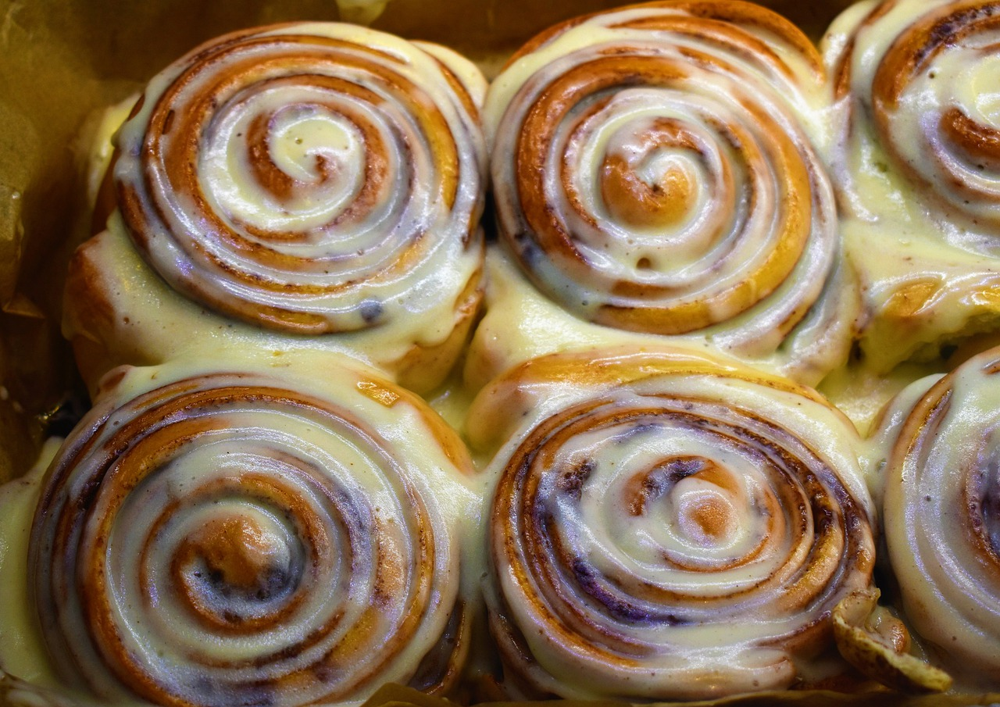

- SWEETROLL
- JAZBAY CROSTATA
- HONNINGBREW MEAD
THE SWEETROLL
introdution
- effects : Restores 5
- FormID : 00064B3D
- A target who is hit by the Wabbajack can turn into a sweetroll.
- sweetrolls can be given to the Dragonborn's children as a gift.
- At PAX Australia 2016, Bethesda gave out real edible sweetrolls to the first hundred convention attendees.
- TES Wiki uses the sweetroll template as a way for editors to express gratitude to other editors.

recipe
- 1 x Salt Pile
- 1 x Jug of MilkHF
- 1 x Sack of FlourHF
- 1 x ButterHF
- 1 x Chicken's Egg